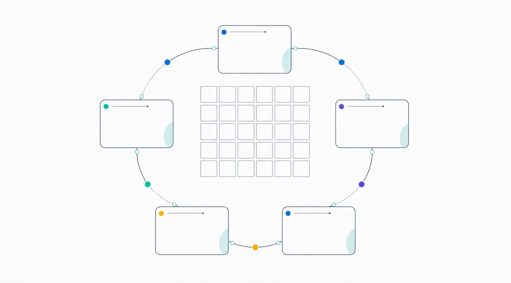
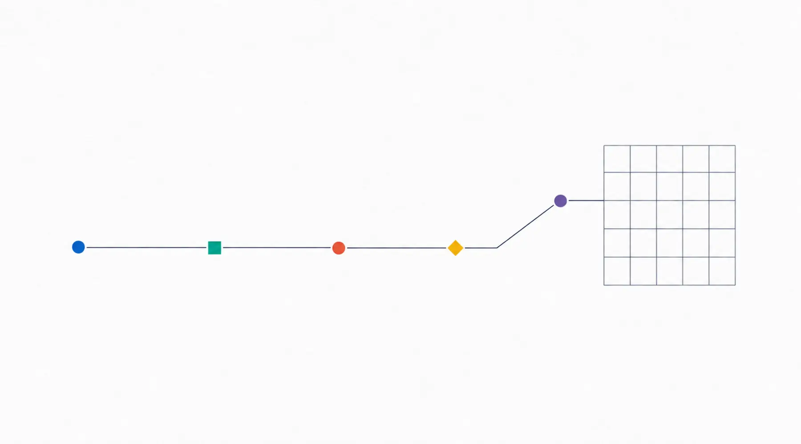

公開・管理プラン
公開して、
終わりにしません。
表示できているか、SSLに問題がないか、連絡先が古くなっていないか。公開後に必要な確認を、必要な範囲でお引き受けします。管理が不要な場合は制作のみでも構いません。
- 月額プラン
- 5,500円/月
- 年額プラン
- 50,000円/年
- 必須か
- いいえ。制作のみでも構いません
初月無料。契約時に翌月分をお支払い
実質月額 約4,167円
月額プラン
5,500円/月
初月無料。契約時に翌月分をお支払いいただき、以後は利用月の前月末までにお支払いください。
年額プラン
50,000円/年
実質月額 約4,167円。満了30日前を目安に更新をご案内します。途中解約の返金は原則ありません。
どちらのプランでも対応内容は同じです。支払い方法の違いだけで、機能差はありません。
毎月、この順番で確認します。
決まった順路で見るので、見落としが起きにくくなります。

含む内容 / 含まない内容
- サーバー管理、公開状態チェック、自動稼働確認
- ドメイン・SSLまわりの確認
- 月1回までの軽微なテキスト修正
- 障害時の一次確認
- ページ追加、レイアウト・デザイン変更、新規文章作成
- 新機能の追加、外部サービス側の有料費用、大幅な画像加工
軽微な修正の例: 文章の一部変更、電話番号・営業時間・リンクの差し替え、画像1〜2点の差し替え（翌月への繰越なし）。

計測設定
数字を見る土台だけ、先に作ります。
おまかせプランでは、GA4・Search Console・主要クリックの計測設定を支援します。その他のプランでは、基本タグを入れられる構造まで整えます。
計測サービスの実接続は、公開作業時にお客様のアカウントで行います。今回のサイトでは未接続です。
お支払いが確認できない場合
すぐに削除はしません。段階的にご案内します。
- 支払期限の10日前・5日前・当日 ご案内 メールで複数回ご案内します。この時点ではサイトは通常どおり表示されます。
- 期限後 一時停止 確認できない場合、削除ではなくサイトを一時停止します。データは残ります。
- 停止から30日以内 再公開できる状態で保管 内容を保持し、入金を確認できれば再公開します。
- 停止から31〜59日 停止を継続 再公開を希望する場合は、データと設定の状態、未払い額、再設定費用の有無を個別に確認します。
- 60日以上 契約終了 別途ご案内のうえ、削除または移管の手続きへ移ります。
一時停止前と契約終了前にご連絡します。停止後30日以内は、入金確認後に再公開できる状態で保管します。
本プランは100%の稼働や一定時間内の復旧を保証するSLAではありません。障害時はまず原因を確認し、復旧作業が管理範囲を超える場合は、作業前に費用と対応方法をご案内します。
サーバーはクルーアセント側の契約で管理する方針です。ドメインの登録名義・更新料・解約時の移管方法は契約書で明示します。推奨は、ドメインの権利をお客様に帰属させ、管理をクルーアセントが代行する方式です。ドメイン費を料金に含めるかは （公開前に確定: ドメイン費の扱い）。